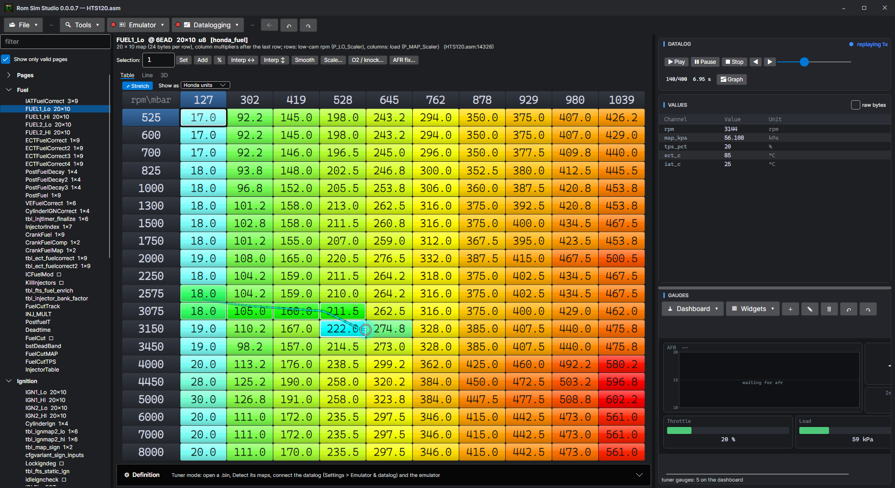

Tables and settings
The calibration editor: the ROM's maps and settings by name, in real units, edited as a table, a line or in 3D — with the cell the engine is in marked as it runs.

Finding a table
The list on the left holds every map and setting the ROM's definitions name, grouped by category (Fuel, Ignition, Idle, Limits…). Type in the search box to narrow it; star one to keep it at the top (favourites belong to the ROM). Show only valid hides runs of bytes whose meaning is not known. Back and Forward step through what you looked at.
Where the definitions come from — the source's annotations, Detect, a definitions file — is on Definitions, Detect and tools.
Three views of a map
- Table — rpm down the side, load across the top, coloured cool to hot as the established tuning software does. Select cells with the mouse or the arrow keys (Shift to grow the selection).
- Line — each row (or column) as a line: drag a point to change it.
- 3D — the map as a surface; drag to turn it, Home to put it back.
Changing values
| Key | Does (to the selected cells) |
|---|---|
| PgUp / PgDn (or ] [, + −) | Up / down the smallest step the ROM stores. |
| Shift+PgUp / PgDn | Up / down ten steps. |
| Ctrl+PgUp / PgDn | Up / down 1 % (Ctrl+Shift: 5 %). |
| F2 or Enter | Type a value. |
| H / V | Interpolate across the rows / down the columns between the first and last selected. |
| S | Smooth: each cell averaged with its selected neighbours. |
| Ctrl+C / V | Copy / paste cells. With Shift: the whole table with its axes, pasted onto this table's axes even when they differ. |
| Ctrl+Z / Ctrl+Y | Undo / redo. |
The box above the table takes an amount to set, add or change by %. Every key can be changed in Settings > Hot keys.
A change goes into the running ROM at once — the simulator uses it on its next read, and with the emulator uploading, so does the car. The ROM's checksum byte is kept right after every change.
The live cell
With the datalog connected (or a log playing, or the simulator running), the cells the engine is reading are lit on the map: the four it is between, blended, or the one it is nearest (the Datalogging menu picks which), with a fading trail behind so you can see where it has been. The trail's length is in Settings > General.
- Lock to live cell moves the selection with the engine, so a key press changes the cell the engine is in.
- The live cell is worked out from the same frame the gauges show, with the ROM's own axes and interpolation, so the cell you change is the one the ECU is using.
Feature pages
Settings that are not maps — rev limits, launch control, VTEC points, the injectors, the GIO outputs, every skeleton module — are laid out on pages the way the established tuning software lays them out: switches, choices from a list, values with their units, small tables. Each row is bound to the ROM's setting by what it does, not its address, so the same page works on HTS ROMs, stock ROMs Detect has read, and skeleton ROMs. Reset to default puts a row back to what the source says.
The definition form
Under a table, the Definition expander shows and edits what the table is: its address, cell type, size, formula, axes and description. Change it and the table is read again; the change is saved with the ROM's definitions.